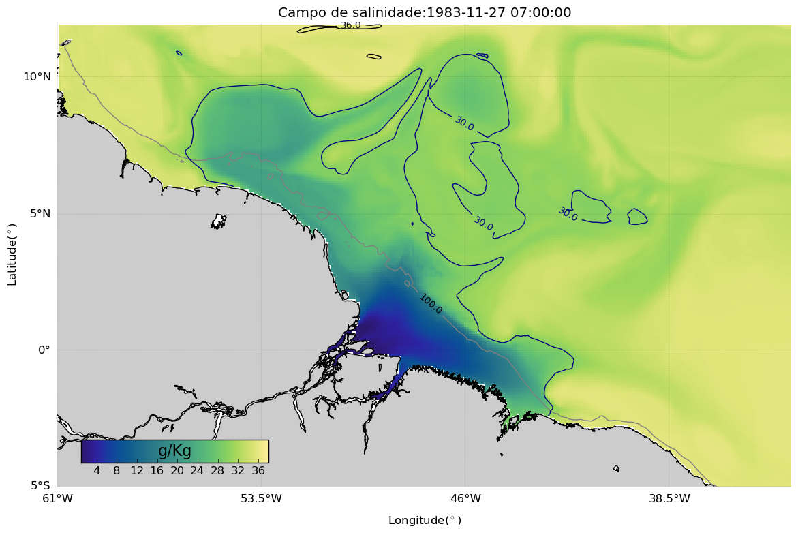
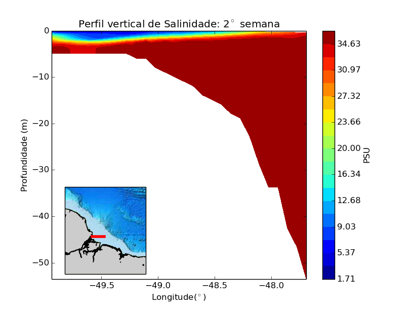

<table height="1000" border="0" cellpadding="2" cellspacing="3" width="1500">
  <tbody>
    <tr> 
      <td valign="middle">
        <font face="Avenir"><big><b>Oxygen Dynamics</b></big><br>
          This was a project during a class at UGA where we ran CESM2. My project was a sensitive case to understand the impact of ice formation in Arctic on oxygen dynamics on CCS.
      </td>
        
      <td>
        
      </td>
    </tr>
    
    <tr>
      <td valign="middle">
        <font face="Avenir"><big><b>Amazon river discharge</b></big><br>
          This was my final project (or capstone project) during my undergraduate. As an oceanographer and limnologist, it is important to learn how the world's largest river discharge affects the continental shelf around it. One of the ways to learn that is by running ocean-eddies models like ROMS. (<a href="https://aip.scitation.org/doi/pdf/10.1063/1.5079164" target="_blank">Fagundes et al., 2018)</a>. This was my first time coding from pre-processing to post-processing an ocean model.</font><br>
      </td>
      
      <td>
        
      </td>
      
      <td>
          
      </td>
     
    </tr>
  </tbody>
</table>

